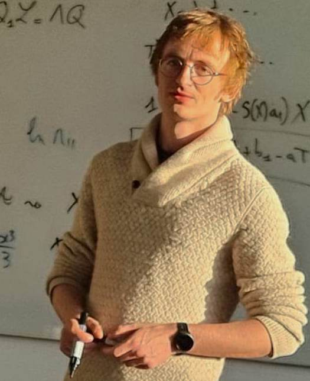

BK21 Postdoctoral Fellow
Seoul National University
Integrable Systems · Mathematical Physics · Algebra

I am currently a BK21 Postdoctoral Fellow at Seoul National University. Previously, I was a Simons Postdoctoral Research Scientist in the Mathematics Department of Columbia University. I received my PhD from MIT in 2017 under the supervision of Victor Kac .
My research is in mathematical physics, with a focus on integrable systems and their underlying algebraic structures. I am particularly interested in Lax operators, W-algebras, Hamiltonian structures, and quantization of integrable systems.
July 2026
New preprint:
Integrable Volterra hierarchies over nonabelian algebras
with J.P. Wang and A.V. Mikhailov.
June 2026
New preprint:
Arithmetic supports of Lax difference hierarchies
.
An interview with the Simons Society of Fellows discussing my research and the connections between mathematics, creativity, and music can be found here .